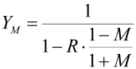
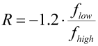
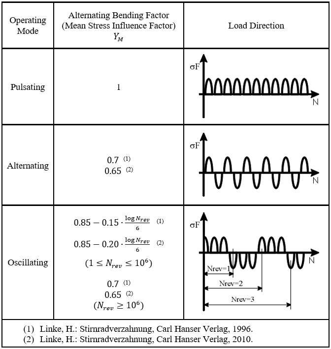

|
|
|


交变弯曲系数
齿根强度计算仅用于计算齿根上的脉动载荷。但在某些情况下，齿根会受到交变弯曲载荷（例如行星齿轮装置中的行星齿轮）。在这种情况下，您可以通过选择 或 方法来更改单个齿轮的交变弯曲系数。除了直接传递这些值之外，还可以选择 方法来计算该系数。为此，您必须打开 选项卡，转到载荷谱部分，并为每个齿轮输入 flow 和 fhigh 参数。fhigh 必须始终具有 100% 的固定默认值。
ISO 6336-5:2003 第 5.3.3 节和 DIN 3990-5 第 4.3 节规定，纯循环载荷下的 YM 值为 0.7。在 ISO 6336-3:2006 附录 B 中，惰轮和行星齿轮的应力比 R 通过以下公式加以考虑：
|  | (12.16) |
|  | (12.17) |
| fhigh | 承受较高载荷的齿面侧的载荷（必须始终具有 100% 的固定默认值） |
| flow | 承受较低载荷的齿面侧的载荷 |
| M | 无量纲数，取决于 |
| 处理类型和载荷类型 | |
| （参见 ISO 6336:2006-3 附录 B 中的表 B.1） | |
| R | 应力比 |
| Y M | 交变弯曲系数 |
| 处理 | 耐久强度 | 静强度校核系数 |
| 钢 | ||
| 渗碳淬火 | 0.8 - 0.15 YS | 0.7 |
| 渗碳淬火并喷丸 | 0.4 | 0.6 |
| 渗氮 | 0.3 | 0.3 |
| 火焰/感应淬火 | 0.4 | 0.6 |
| 未表面硬化钢 | 0.3 | 0.5 |
| 铸钢 | 0.4 | 0.6 |
表 15.13：ISO 6336:2006-3 中表 B.1 - 平均应力比 - 规定的平均应力比 M
根据 Linke [24]，交变弯曲系数（在该文献中记为 Y A）如图 14.19 所示确定。对于塑料，Niemann [7] 建议层压织物取 0.8，PA（聚酰胺）和 POM（聚甲醛）取 0.667。

图 15.11：符合 Linke [24] 的交变弯曲系数
注意
YM 不是标准化的，也不属于 ISO 6336-3 方法 B 的一部分。您应确保所使用的值有经验或试验作为依据。
Alternating bending factor
The tooth root strength calculation is used solely to calculate pulsating load on the tooth root. However, in some cases, the tooth root is subject to alternating bending loads (e.g. a planet gear in planetary gear units). In this scenario you can change the alternating bending coefficient of individual gears by selecting either the or methods. As an alternative to transferring these values directly, select the method to calculate the coefficient. To do this, you must then open the tab, go to the Load spectrum section, and input the flow and fhigh parameters for each gear. fhigh must always have the fixed default value of 100%.
ISO 6336-5:2003, section 5.3.3 and DIN 3990-5, section 4.3, state 0.7 as the value YM for pure cyclic load. In ISO 6336-3:2006, Annex B, the stress ratio R for idler and planetary gears is taken into account by using this formula:
| (12.16) | |
| (12.17) |
| fhigh | Load on the flank side that is subject to the higher load (must always have the fixed default value of 100%) |
| flow | Load on the flank side that is subject to the lower load |
| M | Dimensionless number depending |
| on the type of treatment and load type | |
| (see Table B.1 in ISO 6336:2006-3, Annex B) | |
| R | Stress ratio |
| Y M | Alternating bending factor |
| Treatment | Endurance strength | Coefficient for static proof |
| Steels | ||
| case-hardened | 0.8 - 0.15 YS | 0.7 |
| Case-hardened and shot peened | 0.4 | 0.6 |
| Nitrided | 0.3 | 0.3 |
| Flame/induction-hardened | 0.4 | 0.6 |
| Not surface-hardened steel | 0.3 | 0.5 |
| Cast steel | 0.4 | 0.6 |
Table 15.13: Mean stress ratio M as specified in Table B.1 - Mean Stress Ratio - in ISO 6336:2006-3
According to Linke [24], the alternating bending factor (described there as Y A) is determined as shown in Figure 14.19. For plastics, Niemann recommends [7] 0.8 for laminated fabric and 0.667 for PA (polyamide) and POM (polyoxymethylene).
Figure 15.11: Alternating bending factor in accordance with Linke [24]
Note
YM is not standardized and is not part of ISO 6336-3 Method B. You should ensure that the values used are backed up by experience or tests.